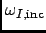
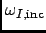

Next: Parameters
Up: Elastic Incoherent Structure Factor
Previous: Elastic Incoherent Structure Factor
Contents
Theory and implementation
The Elastic Incoherent Structure Factor (EISF) is defined as the limit of the incoherent intermediate scattering function
for infinite time,
Using the above definition of the EISF one can decompose the incoherent intermediate scattering function as follows:
where
decays to zero for infinite time.
Taking now the Fourier transform it follows immediately that
The EISF appears as the amplitude of the elastic line in the neutron scattering spectrum. Elastic scattering is
only present for sytems in which the atomic motion is confined in space, as for solids. To understand which information
is contained in the EISF we consider for simplicity a system where only one sort of atoms is visible to the neutrons.
To a very good approximation this is the case for all systems containing a large amount of hydrogen atoms, as biological
systems. Incoherent scattering from hydrogen dominates by far all other contributions. Using the definition of the van Hove
self-correlation function
[7],
which can be interpreted as the conditional probability to find a tagged particle at the position  at time
at time  ,
given it started at
, one can write:
,
given it started at
, one can write:
The EISF gives the sampling distribution of the points in space in the limit of infinite time. In a real experiment this
means times longer than the time which is observable with a given instrument. The EISF vanishes for all systems in which
the particles can access an infinite volume since
approaches for large times. This is the case for
molecules in liquids and gases.
For computational purposes it is convenient to use the following representation of the EISF [14]:
where  is the number of selected species,
is the number of selected species,  the number of atoms of species I,
 the weight for
specie I (see Section 4.2.1 for more details) and for each specie the following expression for the elastic
incoherent scattering function is
the number of atoms of species I,
 the weight for
specie I (see Section 4.2.1 for more details) and for each specie the following expression for the elastic
incoherent scattering function is
This expression is derived from definition (4.174) of the EISF and expression (4.142) for the intermediate
scattering function, using that for infinite time the relation
holds. In this way the computation of the EISF is reduced to the computation of a static thermal average. We remark at this
point that the length of the MD trajectory from which the EISF is computed should be long enough to allow for a representative
sampling of the conformational space.
nMOLDYN allows one to compute the elastic incoherent structure factor on a grid of equidistantly spaced points along the
q-axis:
where  is a user-defined number of q-shells, the values for are defined as
is a user-defined number of q-shells, the values for are defined as
 ,
and for each specie the following expression for the elastic incoherent scattering function is:
,
and for each specie the following expression for the elastic incoherent scattering function is:
Here the symbol
 denotes an average over the q-vectors having the same modulus
. The program corrects the atomic input trajectories for jumps due to periodic boundary conditions.
denotes an average over the q-vectors having the same modulus
. The program corrects the atomic input trajectories for jumps due to periodic boundary conditions.
Next: Parameters
Up: Elastic Incoherent Structure Factor
Previous: Elastic Incoherent Structure Factor
Contents
pellegrini eric
2009-10-06